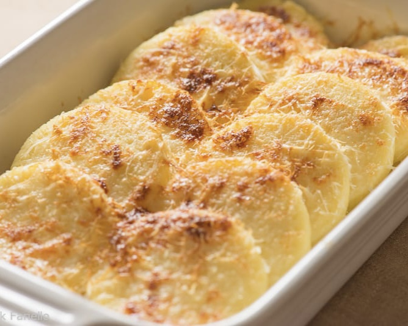

INGREDIENTS
- 4 cups of whole or 2% milk
- 175 g of semolina flour
- 1 tsp of salt plus more as desired
- 4 tblsp of unsalted butter divided, plus more for greasing
- 1 heaping cup of freshly grated Parmigiano-Reggiano cheese
- A large pinch of freshly grated nutmeg
- 2 large egg yolks
PROCEDURE
- Start by heating the milk in a large saucepan and bring it to a boil.
- Then slowly pour in the semolina flour.
- Cook over low heat for approximately 15 to 20 minutes or until the mixture becomes very thick.
- Remember to stir vigorously the entire time.
- Now add the butter, salt, parmigiano cheese and the grated nutmeg.
- Finally add the two large egg yolks.
- Place and spread into a thin layer the mixture on a sheet of parchment in order for it to cool.
- Use biscuit cutters or a glass to cut the mixture into round circles.
- While you place them in the greased baking sheet, overlap them.
- When finished sprinkle more cheese and add some butter.
- Insert it in the oven until golden brown and bubbling (approximately 45min).